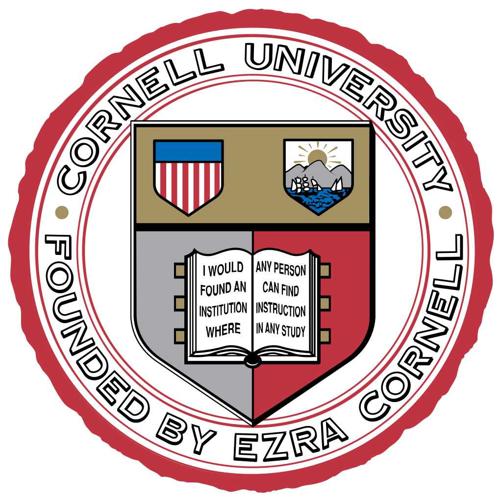
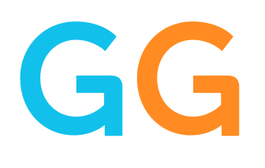

Hello, my name is Denis! Currently, I am a product manager at GiveGab in Ithaca, New York. On my free time, I enjoy doing many things. First, I like to read books, mostly in philosophy or psychology. If I am not reading, I also enjoy programming, and working on my cs50 course. It keeps my mind working, and helps me learn new material outside of my weekday job! For a more relaxed hobby, I enjoy going to the gym, playing soccer, and working on my motorcycle.
After graduating from Miami Palmetto Senior High School in 2013, I moved to Ithaca, New York to attend Cornell University. Initially drawn to Cornell for their veterinary medicine program, I ended up exploring a variety of different fields, before finally settling with an independent major where I was able to combine my two passions, philosophy and information science. While in college, I worked in the fitness centers where I met my best friends Chris and Vince. I also played club soccer, which allowed to practice my favorite sport, and travel across the Eastern United States. My junior year, the team made it to nationals, and we traveled to Phoenix, Arizona to play against some of the best schools in the US. We had a great run, and ended up placing top ten in the country.
After graduating in 2017, I moved back home to Miami to spend a few months with my family. While I was back home, I worked at a fitness studio called Orange Theory Fitness in Coral Gables. The studio was a fun and challenging work place, as it is nationally renowned for its good service and great coaches. While working there, I made some incredible friends who I still talk to this day. After about 6 months, I accepted an offer for a startup back in Ithaca, called GiveGab. At the time, there were only 20 employees in the whole company! However, the small size did not last very long, as the first week I started, it was announced that we purchased a much larger company, and would be undergoing a merger. As of today, we have 60 employees, and we keep growing, making our name known in the nonprofit fundraising space. Some giving days we have hosted include Amplify Austin Day, Notre Dame, Give for Good Louisville, and Extra Give.
Outside of work, I have a few hobbies that help pass the time. The first is going to the gym. I picked up weightlifting in college with the help of my friends Chris and Vince. It's a great way to relieve stress, and the social aspect of the fitness scene is very positive. Everyone is willing to lend a helping hand, and you can see how passionate they all are with fitness and improving their health. My other passions are programming, working on cars and motorcycles. I started programming in college, and am now taking additional courses to get more skills in the field, in pursuit of being able to take on projects at work. Last fall, I took the MSF beginner's rider course to get my motorcycle license in the state of New York. Thanks to my experienced course instructor, Dennis, I gained confidence and experience riding large bikes in just one weekend!